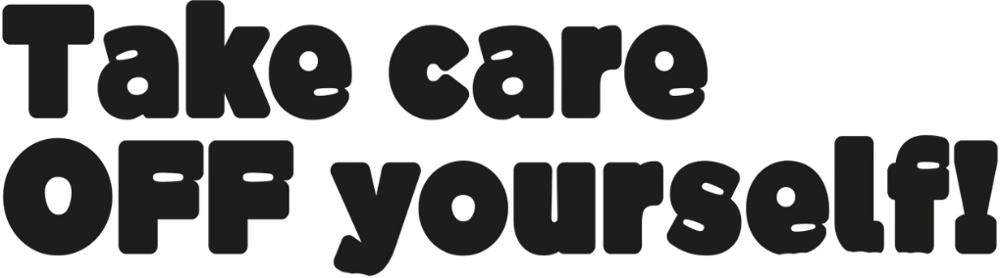
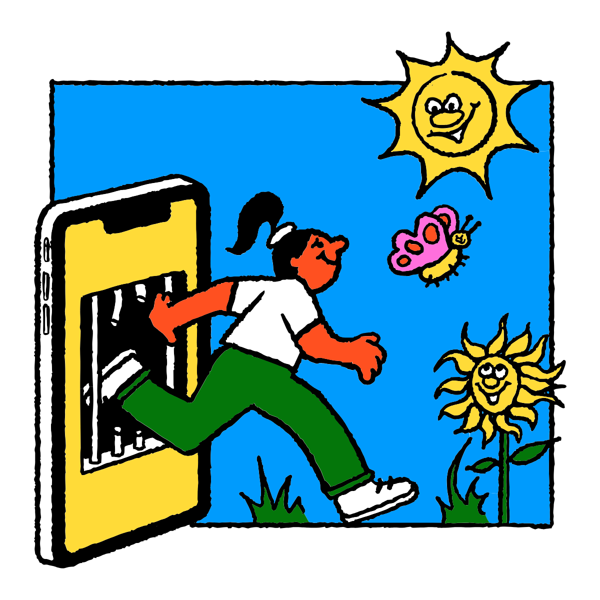

Według danych WHO przeciętny dorosły spędza przed ekranem ponad 6 godzin dziennie, młodzi dorośli nawet 9.
W Polsce aż 37% osób w wieku 18–34 lat przyznaje, że nadmiar bodźców cyfrowych negatywnie wpływa na ich samopoczucie.
Konsekwencje to problemy ze snem, trudności z koncentracją, nasilone stany lękowe czy poczucie osamotnienia. Take Care OFF Yourself to projekt, który ma na celu zachęcić do refleksji nad tym, jak nadmiar bodźców cyfrowych wpływa na nasze samopoczucie i jak możemy sobie pomóc.